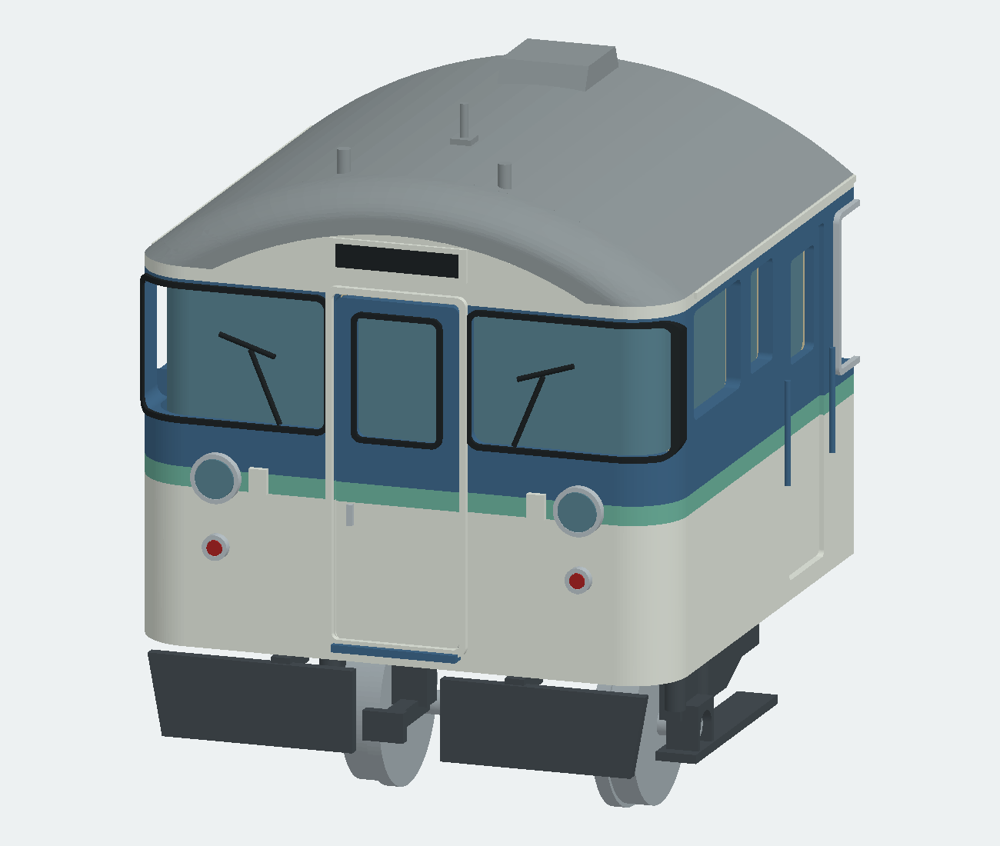

2026-10-24 / 調査対象コード 92e8a5c24 / 1/80・16.5 mm軌間 / 前頭・側面・屋根・後妻・床下・台車・室内・塗装・工作
クハ115系1000番台系列
部位別の実車調査と現モデルの見直し
現モデルは外観再設計が必要です。前頭部の折妻と窓構成、左右の側窓差、裾絞り、屋根機器、台車中央の構造に相違・欠落が見つかりました。細部を追加するだけでは解消できません。
ユーザー指定は「長野色の先頭車・1/80 HO」。車番・年度まで固定したものではありません。現在モデルの「更新後代表形」は従来の設計側の仮定です。異なる車両の特徴を混ぜず、確認済み／写真からの判断／未確定／模型側の設計を分けます。
72項目の部位別検討11領域20資料P0＝外観・仕様の基礎を先に修正
この資料は調査・再設計方針です。形状修正済みの新モデルではありません。既存149／156部品のBRep・開口・干渉検査は、生成物の幾何成立を調べたものです。実車との一致、実印刷、組立、走行の合格を意味しません。既存CAD・STLは比較用として保全します。
同じ「115系1000番台」でも混ぜない仕様
| 資料の車両 | 位置付け | 流用時の制約 |
|---|
| JR長野色・更新後N編成 | 従来モデルが仮定した対象。ユーザーが車番・年度まで指定したものではない。 | 便所付きクハの左右・床下・屋根資料を同一車へ揃える。 [TX] |
|---|
| JR長野色・1994〜97年N13／N15 | KATO製品が設定した時期。冷房改造後で更新後製品とは別。 | 模型のパンタグラフ等は編成の電動車の仕様。クハへの装備指定ではない。 [KA] |
|---|
| クハ115-1106・便所なし1100 | 2023年保存修繕後の鮮明な写真。前頭部・台車の構成に有用。 | Hゴム・屋根再施工、保存設備、便所なしの窓・床下を識別。 [1106] [WALK] |
|---|
| クハ115-1222・N15訓練車 | 2013年2月、便所付き1200の外板・扉・前頭を確認できる。 | 湘南色の訓練車。帯・ロゴ・仕切変更は長野色営業車へ移植しない。 [N15] |
|---|
| しなの鉄道各車 | 事業者の主要寸法・製造差の説明に有用。 | 現行の便所有無・ワンマン機器・内装をJR時代へ転用しない。 [SH] [SV] [S6] |
|---|
1000番台系列という大分類と、クハの1000・1100・1200という区分を分けます。1106を「別系列だから無関係」とせず、共通形状だけを確認し、便所・窓割・床下の違いを除外します。
寸法の根拠と適用範囲
| 項目 | 実車 | 1/80 | 確度・条件 |
|---|
| 車体長 | 19500 mm | 243.750 mm | 数値確認 [JR] |
|---|
| 連結面間長 | 20000 mm | 250.000 mm | 数値確認 [SH] |
|---|
| 最大車体幅 | 2950 mm | 36.875 mm | 数値確認 [JR] |
|---|
| 屋根高（レール面基準） | 3654 mm | 45.675 mm | 数値確認 [SH] |
|---|
| 床面高（レール面基準） | 1225 mm | 15.3125 mm | 数値確認 [SH] |
|---|
| AU75G本体 長×幅×高 | 3660×2110×376 mm | 45.750×26.375×4.700 mm | 数値確認 [ME] |
|---|
| 原型TR62軸距 | 2100 mm | 26.250 mm | 原型参考・対象照合要 [TR] |
|---|
| TR62の車輪径 | 860 mm | 10.750 mm | 実車参考・使用条件要 [TB] |
|---|
| 原型TR62 枕ばね前後中心間 | 330 mm | 4.125 mm | 原型参考・対象照合要 [BL] |
|---|
| 原型TR62 側枠中心間 | 1640 mm | 20.500 mm | 原型参考・HO横調整要 [TR] |
|---|
| 台車中心間 | 13800 mm | 172.500 mm | ユーザー図採用・独立確認未了 |
|---|
| 前頭隅R・折角・窓寸法 | 未確定 | 未確定 | 推定値を確定扱いしない |
|---|
原型TR62の参考横寸法は、吊りリンク側2110、ダンパー側2510、最大2620 mm。ディスク中心は左右±245 mm。対象のTR62A／更新形への一致とHO16.5機構への横調整を確認するまで、設計確定値にはしません。ディスク径の「600φ」読みは不鮮明なので保留。
現モデルと照合して見つかった問題

現モデルのレンダリング。実車写真でも修正後の完成予想でもありません。ソース92e8a5c24の外観上の問題を比較するために掲載。
客扉中心の実車換算4304／10480／16104 mm、扉間6176／5624 mmの差はコードからの計算です。実車の扉間がこの通りであると確認した数値ではありません。
仕様と基準
A01 対象車番・年代 P0 / 未確定
- 実車・資料の確認
- ユーザー指定は115系1000番台の先頭車・長野色・1/80 HO。正確な車番、年度、更新前後は未指定。
- 現モデルの状態
- 「更新後代表形」を選び、別番台・別時期の資料を形状へ混在させた。
- 設計判断・修正方針
- 便所付き車と1106等の便所なし車を車番で区別。1100区分全体を一律便所なしとしない。次の形状確定前に1車番・1時期の資料台帳を作る。
- 未確認・次の照合
- 同じ車の左右・前後・屋根・床下を揃える。資料不足を「代表形」で埋めない。
[JR] [1106] [N15] [KA] [TX] / コード：manifest(), L349以降
A02 長さの基準 P0 / 数値確認
- 実車・資料の確認
- 車体長19500 mmと連結面間20000 mmは異なる基準。1/80では243.750／250.000 mm。
- 現モデルの状態
- 車体長は整合するが、連結器の突出形状・高さまで独立確認したわけではない。
- 設計判断・修正方針
- 車体端と連結面を別基準面にし、全長を部品の適当な突出で合わせない。
- 未確認・次の照合
- 前後の端面から連結面までの配分・密着連結器の実位置。
[JR] [SH] / コード：manifest(), L349以降
A03 幅・高さ・床面 P0 / 数値確認
- 実車・資料の確認
- 最大幅2950、屋根高3654、床面高1225 mm。1/80では36.875、45.675、15.3125 mm。
- 現モデルの状態
- 最大包絡寸法だけは合うが、その間の断面を単純化している。
- 設計判断・修正方針
- レール面Z=0を固定。床面は客室上面、屋根高は屋根外板基準として、床板下面や冷房上端と分ける。
- 未確認・次の照合
- 外板基本幅・窓面幅・雨樋張出し、ばね沈みを含む資料条件。
[JR] [SH] / コード：manifest(), L349以降
A04 台車中心・車端距離 P0 / 参考図採用
- 実車・資料の確認
- 13800 mmの台車中心間はユーザー提供図の記載。模型172.500 mm。
- 現モデルの状態
- PIVOTSは模型35.625／208.125 mmで、この間隔に合わせてある。
- 設計判断・修正方針
- 現値は暫定として残せるが、AI参考図とは独立した形式図で確認してから床下配置の基準にする。
- 未確認・次の照合
- 台車中心間の一次寸法裏付け、車体端／連結面とのオフセット。
コード調査・設計判断 / コード：manifest(), L349以降
A05 写真・図・模型の証拠の違い P0 / 資料評価
- 実車・資料の確認
- 事業者諸元表は大寸法、原図は図示対象の寸法、実車写真は外観、模型資料は製品仕様を示す。
- 現モデルの状態
- 以前のREADMEはJRの諸元表を「末尾寸法図」、TOMIX模型写真を「メーカー前頭部写真」と表記した。
- 設計判断・修正方針
- 呼称を訂正する。AI三面図は作図補助に限定し、寸法と部品数の正本にしない。
- 未確認・次の照合
- 窓ピッチ・折角・Rの入った形式図。写真の透視補正だけで実測精度とはしない。
[JR] [TX] / コード：manifest(), L349以降
車体と断面
A06 前面の折妻 P0 / 写真確認
- 実車・資料の確認
- 中央貫通部と左右の前面は、幌枠だけの突出では説明できない浅い折妻の構成。外端で側面へ回る。
- 現モデルの状態
- 中央から左右の大部分をX=0の平面にし、左右端のRだけで顔を作っている。
- 設計判断・修正方針
- 水平断面に貫通部・左右平面・隅曲面の境界を定義する。前面窓やライトの座標もその面から取る。
- 未確認・次の照合
- 折角、中央張出し量、各平面の幅。公式投稿は直接取得未了なので定量根拠にしない。
[N15] [1106] [FOLD] / コード：perimeter(), body(), roof(), L54–110・191–221
A07 前頭隅の曲率 P0 / 未確定
- 実車・資料の確認
- パノラミック部は正面と側面を滑らかにつなぐが、車体・窓・ガラスの各曲率が同一とは限らない。
- 現モデルの状態
- CORNER=3.75 mm、実車R300相当を全高さに適用。R300を示す一次根拠はない。
- 設計判断・修正方針
- 複数高さの水平断面と接線位置を先に拘束。単一Rを都合よく全箇所へ配らない。
- 未確認・次の照合
- 実車R、曲率変化、窓ガラスと外板のずれ。
[N15] [1106] / コード：perimeter(), body(), roof(), L54–110・191–221
A08 裾絞り P0 / 写真確認
- 実車・資料の確認
- 側面下部は内側へ絞られ、窓面の幅と裾の幅が異なる。
- 現モデルの状態
- body()は同じ平面輪郭を高さ方向に押し出すため、垂直な箱になっている。
- 設計判断・修正方針
- 正面断面に窓面・折れ開始高さ・裾端を別点で持たせ、長手方向へ展開する。
- 未確認・次の照合
- 絞り量、開始高さ、扉下・前面下部との連続。
[N15] [1106] / コード：perimeter(), body(), roof(), L54–110・191–221
A09 屋根肩と一般部断面 P0 / 写真確認
- 実車・資料の確認
- 屋根中央から肩へ曲率が変わり、側面上部・雨樋との接続が全体の印象を決める。
- 現モデルの状態
- 幅と頂点高から単一円弧を算出し、垂直側壁へつないでいる。実車断面の検証はない。
- 設計判断・修正方針
- 一般部断面を独立した正本にする。円弧の仮定は断面写真・形式図との一致で判定する。
- 未確認・次の照合
- 屋根肩R・中央R・雨樋の高さ、接線条件。
[N15] [SH] / コード：perimeter(), body(), roof(), L54–110・191–221
A10 前頭屋根のドーム P0 / 写真確認
- 実車・資料の確認
- 額・左右肩・一般屋根をつなぐ複曲面。正面輪郭だけでなく平面・側面のふくらみも必要。
- 現モデルの状態
- X=0〜4.05 mmだけで高さと幅を変え、一般部へ直結。前後長とふくらみは未照合。
- 設計判断・修正方針
- 前面上端、窓上端、雨樋端、一般部開始の複数断面から再構成。面のこぶ・接線の急変も調べる。
- 未確認・次の照合
- ドーム後端位置と各断面、正面表示器周囲の局所形状。
[N15] [ROOF] / コード：perimeter(), body(), roof(), L54–110・191–221
A11 雨樋・外板の継ぎ目 P1 / 写真確認
- 実車・資料の確認
- 雨樋は屋根肩に沿い、前頭部付近の終わり方や段差、外板との陰影がある。
- 現モデルの状態
- 左右の長い棒状部品で簡略化し、位置・端部を資料へ対応づけていない。
- 設計判断・修正方針
- 左右端部を前頭部・後妻の資料で別々に決める。塗装境界と実際の樋断面を混同しない。
- 未確認・次の照合
- 樋の断面、出幅、端部位置、更新時の施工差。
[N15] [ROOF] / コード：perimeter(), body(), roof(), L54–110・191–221
前頭部
A12 パノラミック窓の構成 P0 / 写真確認
- 実車・資料の確認
- 左右それぞれ、正面寄りの広い平面ガラスと外側へ回る曲面部。その境界に細い銀色の縦桟が見える。
- 現モデルの状態
- 一枚の連続透明板として扱い、この縦桟を省略した。窓の平面部と曲面部の配分も未照合。
- 設計判断・修正方針
- 外周Hゴム・縦桟・平面ガラス・曲面ガラスを分け、正面／側面の見付幅を同時に合わせる。
- 未確認・次の照合
- 縦桟位置、曲面ガラス半径、上下辺の形。
[N15] [1106] / コード：front(), L141–180
A13 前面窓の傾きと四隅 P0 / 未確定
- 実車・資料の確認
- 正面投影では窓の上下辺・外隅・貫通部脇の輪郭が顔つきを左右する。斜め写真だけでは傾きとRを分離できない。
- 現モデルの状態
- 角丸輪郭を一定Rの車体へ切り込み、各隅の実形状を独立確認していない。
- 設計判断・修正方針
- 写真を基準点で補正し、実車正面／側面写真を別の検証資料にして輪郭を決める。
- 未確認・次の照合
- 窓面の縦方向傾斜、外周各R、ゴムを含む寸法とガラス有効寸法。
[N15] [1106] / コード：front(), L141–180
A14 前面Hゴム P1 / 写真確認
- 実車・資料の確認
- 外周に黒い厚みのある縁があり、ガラス・押え・外板に段がある。保存車1106は修繕時に全交換。
- 現モデルの状態
- 厚みと幅を工作都合で置いた。対象時期のゴム色・断面・見付幅は未確定。
- 設計判断・修正方針
- ガラス開口の輪郭から一定法線幅で別部品化。正面と曲面で見付が不自然に増減しないか確認する。
- 未確認・次の照合
- 黒／灰の時期差、断面厚、接着余裕。
[1106] [N15] / コード：front(), L141–180
A15 貫通扉と幌受け P0 / 写真確認
- 実車・資料の確認
- 中央に縦長の貫通扉、丸角の窓、取手、横手掛け、下部の渡り板。その外側に幌受け・締結部がある。
- 現モデルの状態
- 平板扉と単純な額縁で代用。幌受け上端の耳・締結部や渡り板の形が不足。生成予想図の貫通扉窓は縦長過ぎるとユーザー指摘（2026-10-24）。
- 設計判断・修正方針
- 本モデルの前面貫通扉窓は実車写真に合わせて背の低い丸角形状へ修正する。扉全体の高さと窓の比率は独立設定。開口・Hゴム・透明板を同じ輪郭へ揃える。折妻、幌受け、扉、渡り板の段差も再現。
- 未確認・次の照合
- 窓の数値寸法・R・上下位置、扉と幌受けの段差。ユーザー指示は本モデルへの必須修正であり、旧CADの修正完了ではない。後妻の窓へ一括適用しない。
[N15] [1106] / コード：front(), L141–180
A16 前面行先表示器 P1 / 写真確認
- 実車・資料の確認
- 貫通扉上の額に突出した角丸の表示器枠。窓はさらに内側へ入り、周囲のドームと一体の輪郭を持つ。
- 現モデルの状態
- 前面に四角い箱と黒い板を置いている。額の丸み・枠の段差は弱い。
- 設計判断・修正方針
- 額断面と外周R、枠の奥行き、表示窓を分ける。表示内容・地色は時期指定に従う。
- 未確認・次の照合
- 枠実寸、突き出し、表示部寸法。
[N15] [1106] / コード：front(), L141–180
A17 シールドビーム前照灯 P1 / 写真確認
- 実車・資料の確認
- 左右1灯ずつ。外側の灯具胴・前縁リング・反射鏡・レンズが別の奥行きを持つ。
- 現モデルの状態
- 円柱と環の推定寸法。折妻を持たない面へ取り付け、軸の向きも再検討が必要。
- 設計判断・修正方針
- 中心位置は基準寸法と写真で校正し、灯具の胴を前面に合わせる。照明用穴は外観から独立して設計。
- 未確認・次の照合
- 外径、突出量、灯具軸方向、LED組込み時の肉厚。
[N15] [1106] / コード：front(), L141–180
A18 尾灯 P1 / 写真確認
- 実車・資料の確認
- 前照灯より下に左右1灯。赤いレンズと外周の縁、車体からの突出がある。
- 現モデルの状態
- 位置・半径を推定で設定し、上下灯具の距離を独立検証していない。
- 設計判断・修正方針
- ライト中心・貫通扉・裾の基準点を正面画像で同時に照合。前照灯と同じ単純な形を縮小するだけにしない。
- 未確認・次の照合
- レンズ径と座の径、正面位置、車体内側との干渉。
[N15] [1106] / コード：front(), L141–180
A19 タイフォンのシャッター P1 / 写真確認
- 実車・資料の確認
- 前照灯の内側に丸い覆いと中央の線、上部の小さな矩形部が見える。
- 現モデルの状態
- 小さな直方体だけで、特徴的な丸い覆いがない。
- 設計判断・修正方針
- シャッター外周・段・中央線・上部覆いを別形状にする。113系のスリット形を混ぜない。
- 未確認・次の照合
- 径、厚さ、中心位置。
[N15] [1106] [TX1] / コード：front(), L141–180
A20 ワイパーと支持部 P1 / 写真確認
- 実車・資料の確認
- 窓下の支点から伸びる腕・リンクとブレード。左右で運転側の機器や停止姿勢を確認する必要がある。
- 現モデルの状態
- 直線の細棒が中心で、支点・屈曲・ガラスとの距離を省略。
- 設計判断・修正方針
- 支点・腕・ブレードを分け、正面と側面から接触位置を照合する。細部は別印刷／金属線の選択肢も用意。
- 未確認・次の照合
- 停止姿勢、リンク形式、線径。
[N15] [1106] / コード：front(), L141–180
A21 手掛け・ステップ・小金具 P1 / 写真確認
- 実車・資料の確認
- 窓下の長い横手掛け、尾灯内側の短い手掛け、裾の踏み部などが前面の細い影を作る。
- 現モデルの状態
- 多数が欠落。前面が広い無地の板に見える原因になっている。
- 設計判断・修正方針
- 取付足と棒を区別し、外板から離す。長さ・向きは車番付き正面写真から採る。
- 未確認・次の照合
- 寸法、印刷可能な線径と実車縮尺との差。
[N15] [1106] / コード：front(), L141–180
側面・窓・扉
A22 運転室の独立側窓 P0 / 写真確認
- 実車・資料の確認
- パノラミック窓の後ろから乗務員扉までの独立側窓は1個。乗務員扉の窓は別に数える。
- 現モデルの状態
- X4.9と16.0 mmに2個の独立窓を作っており、1個多い。
- 設計判断・修正方針
- 過剰な窓を除き、前頭回り込み終端・独立側窓・乗務員扉の順で前後長を組み直す。
- 未確認・次の照合
- 1個の窓の幅・高さ・柱幅、乗務員扉までの距離。
[1106] [N15] / コード：body(), L82–139
A23 運転士側の第一客扉前 P0 / 写真確認
- 実車・資料の確認
- 確認した1106・1222の運転士側は、乗務員扉の後ろにHゴム固定の戸袋窓1枚、その後ろが第一客扉。
- 現モデルの状態
- この側の枚数には合うが、左右共通配列として使ってしまった。
- 設計判断・修正方針
- 左右を「運転士側／助手側」と明記した別配列へ。単なるX反転・鏡像で片付けない。
- 未確認・次の照合
- 戸袋窓寸法と車番による相違。
[1106] [N15] / コード：body(), L82–139
A24 助手側の第一客扉前 P0 / 写真確認
- 実車・資料の確認
- 1126の原写真では細い二段窓と、さらに細いHゴム戸袋窓の2枚構成。
- 現モデルの状態
- 運転士側の1枚配置を流用しており、二段窓が欠ける。
- 設計判断・修正方針
- 窓の種類と順序を独立定義し、同じ車番の反対側と対にして確認する。
- 未確認・次の照合
- 対象車への一致、各窓幅。原寸法図がなく、二次資料の小寸法候補は未採用。
[1126] / コード：body(), L82–139
A25 客扉中心と窓ピッチ P0 / コード確認
- 実車・資料の確認
- 同じ4枚窓構成の区間を挟む客扉位置は、窓・座席・柱と一緒に評価すべき。
- 現モデルの状態
- 客扉中心4304／10480／16104 mm相当。間隔6176と5624 mmで552 mm違う。広窓中心間は1400 mm相当。
- 設計判断・修正方針
- この数値を確定寸法から外す。扉中心・戸袋・広窓・柱・室内位置を連立で照合する。
- 未確認・次の照合
- 実車の正確な窓割図。シートピッチ候補1490 mmを窓ピッチへ無条件転用しない。
コード調査・設計判断 / コード：body(), L82–139
A26 客扉間4枚の種類 P0 / 写真確認
- 実車・資料の確認
- 戸袋固定窓→広い二段窓→広い二段窓→戸袋固定窓という並びが確認できる。
- 現モデルの状態
- 枚数だけは合うが、幅だけでサッシ種別を判定して全て同じ外枠にしている。
- 設計判断・修正方針
- 各窓に固定Hゴム／二段サッシの型を付ける。両側の第二・第三客扉間で、第三客扉直前の幅440 mm相当の窓は根拠を再確認。
- 未確認・次の照合
- 各開口・柱・サッシ幅の実寸。
[N15] [1106] / コード：body(), L82–139
A27 二段サッシの断面 P1 / 写真確認
- 実車・資料の確認
- 銀色の外枠、上段と下段のガラス、水平中桟が異なる奥行きにある。固定窓とは角の見え方も違う。
- 現モデルの状態
- 広窓に一本の横棒を足しただけで、サッシの段差や合わせ部を持たない。
- 設計判断・修正方針
- 外枠・上下枠・中桟・透明板を分ける。横桟高さを一律h×0.51で確定しない。
- 未確認・次の照合
- 開口と外枠寸法の違い、上下ガラス重なり、模型の接着代。
[N15] [INT] / コード：body(), L82–139
A28 戸袋窓のHゴム P1 / 写真確認
- 実車・資料の確認
- 戸袋窓は黒いHゴムで固定された丸角窓。アルミ外枠の二段窓と外観が明確に違う。
- 現モデルの状態
- 全側窓を同じアルミ銀色枠で処理している。
- 設計判断・修正方針
- Hゴム型の独立部品を用い、固定窓へ中桟を足さない。開口Rも二段窓とは別パラメータにする。
- 未確認・次の照合
- Hゴムの幅と色、角R。
[N15] [1106] / コード：body(), L82–139
A29 客用両開き扉 P1 / 写真確認
- 実車・資料の確認
- 中央合わせ目、左右の縦長丸角窓と黒Hゴム、半自動用の手掛け、下部の細い凹み、金属踏板がある。
- 現モデルの状態
- 扉葉と透明板が主体で、これらの小部品・下部の形を省略。
- 設計判断・修正方針
- 扉外周と窓のRを区別し、Hゴム・手掛け・踏板・中央ゴムを追加する。
- 未確認・次の照合
- 扉幅1300 mmは二次候補、開口高さ・窓寸法・扉面の引込み量も未確認。
[N15] / コード：body(), L82–139
A30 乗務員扉と手すり P1 / 写真確認
- 実車・資料の確認
- 外開き扉の縦長窓、ヒンジ、取手、両脇手すり、下の踏み部。
- 現モデルの状態
- 平板・窓・同寸棒2本へ簡略化。扉の輪郭位置自体も推定。
- 設計判断・修正方針
- 独立側窓の過剰分を直してから扉位置を決定。外周の段差・ヒンジ・踏板を作る。
- 未確認・次の照合
- 幅・高さ・取手側、左右別の配置、各手すり寸法。
[N15] [1106] / コード：body(), L82–139
A31 便所周辺と後位車端の窓割 P0 / 未確定
- 実車・資料の確認
- 便所付き側と反対側では窓の種類・並びが異なる。便所なし1100の全景はそのまま使えない。
- 現モデルの状態
- 最後の広窓1枚を小窓へ置き換えるだけで便所側を表現。
- 設計判断・修正方針
- 同一の便所付きクハの両側写真から車端区画全体を描き分ける。便所窓だけを縮めて帳尻を合わせない。
- 未確認・次の照合
- 車番・年度ごとの便所窓、隣接サッシ・戸袋窓、室内区画。
[N15] [1106] / コード：body(), L82–139
A32 側面表示・点検蓋 P1 / 写真確認
- 実車・資料の確認
- 行先表示の窓、車体下部の点検蓋、取付跡が写真で見える。サボ受けの有無にも時期差がある。
- 現モデルの状態
- 標記・蓋・側面表示をほぼ省略。
- 設計判断・修正方針
- 車番と年代ごとの外装部品台帳にし、板状の点検蓋と印刷表現だけの標記を分ける。
- 未確認・次の照合
- 表示位置、サボ受けの有無、蓋の機能と寸法。
[N15] [KA] / コード：body(), L82–139
屋根と機器
A33 AU75Gの基準外形 P0 / 数値確認
- 実車・資料の確認
- 製造者資料の本体3660×2110×376 mm。模型45.750×26.375×4.700 mm。室外軸流ファンは2台。
- 現モデルの状態
- 包絡寸法と2ファンは整合する。取付高さや局所形状まで確認できたわけではない。
- 設計判断・修正方針
- この基準値は残し、キセ・ファン・ルーバー・脚を資料別に精密化する。AU75Bと混同しない。
- 未確認・次の照合
- 取付脚・屋根からの高さ、各開口の実寸。
[ME] [TX2] / コード：roof(), L191–267
A34 キセ・ファン・ルーバー P1 / 写真確認
- 実車・資料の確認
- AU75Gはステンレスのキセ。山形の横断面、二つの丸いファン部、長辺の吸排気部が異なる形を持つ。
- 現モデルの状態
- ファン径・中心位置と9本の棒を推定で置き、全体を屋根グレーにしている。
- 設計判断・修正方針
- 無塗装ステンレスの色を分け、実写真で天板の継ぎ目・リブ・開口領域を対応づける。
- 未確認・次の照合
- ファン中心・径、ルーバーの本数と形状。
[ME] [N15] [TX2] / コード：roof(), L191–267
A35 冷房脚・ランボード P1 / 資料確認
- 実車・資料の確認
- 冷房装置の台座と屋根の間に高さがあり、脇の歩み板にも製造時期差がある。
- 現モデルの状態
- 脚4個を推定し、歩み板を省略した。脚底と屋根の合わせだけを幾何検査した。
- 設計判断・修正方針
- 対象クハの屋根写真で脚・台座・歩み板の配置を決める。屋根に食い込まないこととは別に外観を検証。
- 未確認・次の照合
- 歩み板の有無・大きさ、支持脚位置。
[SV] [N15] / コード：roof(), L191–267
A36 押込通風器の形・数・間隔 P0 / 写真確認
- 実車・資料の確認
- 屋根写真では丸い上部、開いた端面、内側の仕切りが見える。配置は製造・冷房改造・更新で異なる。
- 現モデルの状態
- 6個を単純な台形柱とし、X31／64／85／169／191／215 mmへ根拠の弱い配置。
- 設計判断・修正方針
- 数・位置は車番付き資料で固定。開口と丸みを作る。6個・前後3個ずつを1000番台全車の規則にしない。
- 未確認・次の照合
- 対象車の各中心座標、台座跡と残存機器の区別。
[N15] [ROOF] [SV] [TX] / コード：roof(), L191–267
A37 無線アンテナ・配線 P1 / 写真確認
- 実車・資料の確認
- 前頭屋根にアンテナ本体・台座と屋根上を通る配線が見える。架線や駅設備が画像に重なる。
- 現モデルの状態
- 小箱に円柱を立てるだけで、実物形状・位置・配線と未照合。
- 設計判断・修正方針
- 原写真の車両側部品だけを抽出し、台座・本体・配線を分ける。架線を模型部品に取り込まない。
- 未確認・次の照合
- アンテナ形式、配線経路、更新時差。
[N15] [ROOF] / コード：roof(), L191–267
A38 信号炎管・その他前頭小機器 P1 / 未確定
- 実車・資料の確認
- 左右の機器を同じ物と決め付けず、信号炎管・台座・手掛け等を写真上で識別する必要がある。
- 現モデルの状態
- 左右対称に同じ円柱を作り「信号炎管・ホイッスル」とまとめて命名した。根拠がない。
- 設計判断・修正方針
- 二つを共通ループで作らず、名称・役割・写真位置が確認できた部品だけ登録。
- 未確認・次の照合
- 各車番の機器名、寸法、向き。
[N15] [ROOF] / コード：roof(), L191–267
A39 屋根表面・撤去跡 P1 / 写真確認
- 実車・資料の確認
- 長野車の写真に広い防滑処理と旧箱形通風器の跡が写る。保存車には屋根再施工もある。
- 現モデルの状態
- 一様な屋根グレーで表現し、施工境界・撤去跡を持たない。
- 設計判断・修正方針
- 形状の段差と塗装・質感の境界を分ける。深い溝にせず、対象時期の写真に合わせる。
- 未確認・次の照合
- 対象車にその跡が残るか、防滑領域・色。
[ROOF] [1106] / コード：roof(), L191–267
A40 クハと電動車の区別 P1 / 資料確認
- 実車・資料の確認
- 参照写真にはクモハ・モハのパンタグラフや高圧機器、雪切室が含まれる。
- 現モデルの状態
- クハにパンタグラフは作っていないが、参考図の車種混在を排除する台帳がない。
- 設計判断・修正方針
- 屋根資料ごとに車種・向き・撮影箇所を記録。電動車専用機器をクハへ追加しない。
- 未確認・次の照合
- 車番を読めない屋根写真を配置寸法の正本にしない。
[JR] [TX1] [N15] / コード：roof(), L191–267
後妻
A41 後妻の外板・屋根端 P1 / 未確定
- 実車・資料の確認
- 運転台のある前面とは別の妻面。屋根端・側面との隅・車端機器の出方を確認する必要がある。
- 現モデルの状態
- 前面に似た扉寸法と単純な端板を流用し、外観の根拠が薄い。
- 設計判断・修正方針
- 後妻の正面・斜め写真を揃え、前頭部とは別の断面と扉を設計する。
- 未確認・次の照合
- 妻面形状・屋根端のR、後位車端窓の有無。
[WALK] / コード：front()後半, L181–188
A42 貫通扉・幌・渡り板 P1 / 未確定
- 実車・資料の確認
- 編成内の連結部では貫通口・幌・渡り板が一体で見えるが、実部品は別。
- 現モデルの状態
- 額縁と平板扉を簡略配置。前面幌受けと後妻の設備差を十分反映していない。
- 設計判断・修正方針
- 幌装着／未装着を区別し、印刷・着脱・連結間隔を考えて別部品化する。
- 未確認・次の照合
- 各部寸法、連結状態、車体端からの突出。
[WALK] / コード：front()後半, L181–188
A43 梯子・手すり・配管・栓 P1 / 未確定
- 実車・資料の確認
- 妻面には昇降用金具や配管・ジャンパ類が写るが、向き・車番・保存設備の識別が必要。
- 現モデルの状態
- 多くを省略し、前後の連結器もほぼ共通化している。
- 設計判断・修正方針
- 便所付き対象クハの写真で後妻機器を個別登録。1106保存用の垂れたケーブルは追加しない。
- 未確認・次の照合
- 左右位置、栓の型と数量、取付部。
[WALK] / コード：front()後半, L181–188
床下・先頭下部
A44 床下機器の配置正本 P0 / 未確定
- 実車・資料の確認
- クハの床下は、便所・保安装置・更新時期で変わる。外形の似た箱でも別機器。
- 現モデルの状態
- 機器名のない箱7個と空気溜2本を任意配置。個数・位置の根拠はない。
- 設計判断・修正方針
- 同一車の両側と下面の写真に機器IDを振り、形・取付位置・配管を対応づける。無名箱の細密化は後回し。
- 未確認・次の照合
- 各箱の機器名・外形・座標。
[N15] [WALK] / コード：chassis(), L270–295
A45 電動車の機器を混ぜない P0 / 資料確認
- 実車・資料の確認
- TOMIXの編成説明では主制御器・抵抗器はクモハ、SIV・コンプレッサーはモハ114の機器。
- 現モデルの状態
- 無名箱をそのまま残すと、配置が実車に似ていなくても気付きにくい。
- 設計判断・修正方針
- クハの部品名に、他車の主制御器やSIV等を付け替えて精密化したように見せない。
- 未確認・次の照合
- クハ独自の電源・蓄電池・ブレーキ機器の構成。
[TX] [JR] / コード：chassis(), L270–295
A46 便所・給排水・汚物処理 P1 / 未確定
- 実車・資料の確認
- 便所あり／なしで床下機器が変わる。1994〜97年を扱う製品資料は循環式汚物処理装置を明記。
- 現モデルの状態
- 便所仕切りはあるが、対応するタンク・配管を識別できる設計がない。
- 設計判断・修正方針
- 便所付き車は汚物処理装置・給水設備・管路を車番と年度で揃える。1106の床下は正本にしない。
- 未確認・次の照合
- タンク形式・位置、給水設備、更新差。
[KA] [1106] / コード：chassis(), L270–295
A47 ATS・蓄電池等 P1 / 未確定
- 実車・資料の確認
- 保安装置の機器や受電器、蓄電池関係は年代・運用で変わりうる。
- 現モデルの状態
- ATS箱や受電器等を機器名で識別していない。
- 設計判断・修正方針
- 写真で箱の存在を確認したことと機能を確定したことを分ける。銘板・回路資料がなければ名称は保留。
- 未確認・次の照合
- 対象車のATS型式・更新年度、各箱の同定。
[N15] [ROOF] / コード：chassis(), L270–295
A48 スカート P0 / 写真確認
- 実車・資料の確認
- 中央連結器まわりの切欠きと、その下をつなぐ下縁、側面へ回る部分がある。
- 現モデルの状態
- 左右2枚の平板で中央隙間が最下端まで続き、実車と大きく違う。
- 設計判断・修正方針
- 一体の外周と中央開口、折れ・R・取付金具を設計。スノープロウと区別する。
- 未確認・次の照合
- 外周高さと幅、中央開口、前後傾斜。
[N15] [WALK] / コード：chassis(), L270–295
A49 密着連結器と胴受 P1 / 写真確認
- 実車・資料の確認
- 連結器の口・突出部・穴・柄・胴受がそれぞれ異なる立体。走行用の模型連結器とは別の設計課題。
- 現モデルの状態
- 小角板と角棒で代用。実車外観・連結器高さ・模型互換とも未確定。
- 設計判断・修正方針
- 外観用ダミーと走行用交換台座を分ける。中心高さは市販品互換を含めて検証する。
- 未確認・次の照合
- 実車高さ、口の寸法、市販品の可動範囲と取付規格。
[N15] [WALK] / コード：chassis(), L270–295
A50 ジャンパ栓・ホース P1 / 写真確認
- 実車・資料の確認
- 前頭下部には栓・管・蓋が複数あり、向きや車番で配置が異なる。
- 現モデルの状態
- ほぼ欠落。左右対称に追加してよいという根拠もない。
- 設計判断・修正方針
- 前面近接写真に番号を振り、各部品の形と位置を記録。柔らかいホースは別材料も検討。
- 未確認・次の照合
- KE76等の識別、蓋の状態、配管の経路。
[N15] [WALK] [KA] / コード：chassis(), L270–295
台車・輪軸
A51 台車型式と更新状態 P0 / 未確定
- 実車・資料の確認
- 1106のTR62A原形参考と、N編成更新後の密封コロ軸受仕様を区別できる。
- 現モデルの状態
- TR62系と称しただけで、原形／更新形の外蓋・機器を描き分けていない。
- 設計判断・修正方針
- 原図TR62・実車TR62A・更新後軸受の資料を分離。全対象をTR62Eと断定しない。
- 未確認・次の照合
- 選定車番の型式末尾、銘板、更新年月。
[WALK] [TR] [TX] / コード：chassis(), L296–326
A52 側枠・開口・横梁 P0 / 写真・原図確認
- 実車・資料の確認
- 左右側枠の上梁と軸ばね室、軸箱上方の開口、中央部の奥行きがある。原型図は二本の中央横梁を示す。
- 現モデルの状態
- 無孔の板状側枠と単一の中央角柱。空間が埋まり台車が板に見える。
- 設計判断・修正方針
- 側枠の開口と厚み、内側横梁を分けて構成。印刷支持材のための膜を外観に残さない。
- 未確認・次の照合
- 更新仕様の局所形状、実寸厚と造形最小厚の調整。
[TR] [WALK] / コード：chassis(), L296–326
A53 軸箱・軸ばね P1 / 写真確認
- 実車・資料の確認
- 軸箱4箱／台車、各軸箱前後の軸ばね装置で8組／台車。枕ばねとは別の場所。
- 現モデルの状態
- 角箱と平滑円柱で代用し、外蓋・ばね受け・段差を欠く。
- 設計判断・修正方針
- 軸箱蓋は原形と密封形を別仕様化。軸ばねと受け部を正しい位置に置く。
- 未確認・次の照合
- 対象車の蓋形状、覆い、実寸と可動軸受の両立。
[WALK] [TR] / コード：chassis(), L296–326
A54 大径の枕ばね P0 / 写真・原図確認
- 実車・資料の確認
- 中央に大径2組／片側、計4組／台車。コイルばねの装置であり、空気ばねとして作らない。
- 現モデルの状態
- 全て欠落。TR62らしさを損なう最大の要因の一つ。
- 設計判断・修正方針
- 大きなばね・上下の受けを中央側面の主形状として先に作る。原型図の前後中心間330 mmは参考4.125 mm。
- 未確認・次の照合
- 対象TR62A／更新形の寸法との一致、コイル表現の強度。
[BL] [WALK] / コード：chassis(), L296–326
A55 上下揺れ枕・心皿・側受 P0 / 写真・原図確認
- 実車・資料の確認
- 上梁、ばね、低い下の受け梁、心皿と左右側受に高さと役割の違いがある。
- 現モデルの状態
- 中央角柱と心皿円柱しかなく、上下揺れ枕・側受の区別がない。
- 設計判断・修正方針
- 模型の回転支点と実車の外観梁を別レイヤーにする。外側の低い梁を欠かさない。
- 未確認・次の照合
- 心皿取付高、床板との首振り余裕、枕梁外観寸法。
[TR] [BL] / コード：chassis(), L296–326
A56 オイルダンパー・吊りリンク P1 / 写真・原図確認
- 実車・資料の確認
- 中央に縦向きダンパー1本／片側、吊りリンク2か所／片側。計2本・4か所／台車。
- 現モデルの状態
- 両方欠落。中央に見える縦ダンパーをブレーキシリンダと取り違えてはいけない。
- 設計判断・修正方針
- 上下取付部・筒・リンク・ピンを追加し、枕ばねの前後関係を図面で確認。
- 未確認・次の照合
- 造形上の接続方法、対象仕様の細部寸法。
[TR] [BL] [WALK] / コード：chassis(), L296–326
A57 ディスク・制動機構 P1 / 写真・原図確認
- 実車・資料の確認
- 車輪の内側に2枚／軸、4枚／台車のディスク。てこ・パッド・シリンダは内側に組み込む。
- 現モデルの状態
- 輪軸は車軸と車輪だけで、ディスク・制動機構がない。
- 設計判断・修正方針
- ディスクと内側ブレーキを追加。電動台車DT21の外側踏面ブレーキをコピーしない。
- 未確認・次の照合
- ディスク径は原図の潰れた注記で確定不可。原型の中心±245 mmをHOへそのまま適用しない。
[TR] [WALK] / コード：chassis(), L296–326
A58 軸距・車輪径 P1 / 参考寸法確認
- 実車・資料の確認
- 原型TR62の軸距2100 mm、実車撮影資料の車輪径860 mm。模型26.250／10.750 mm。
- 現モデルの状態
- この二つは現寸法と整合。正しい数値でも側枠全体の外観が正しいことにはならない。
- 設計判断・修正方針
- 基準寸法として残すが、対象車の摩耗・車輪条件と模型フランジを分ける。
- 未確認・次の照合
- 実車の使用状態、走行輪軸の規格・互換。
[TR] [TB] / コード：chassis(), L296–326
A59 横幅とHO16.5への調整 P0 / 原図・設計判断
- 実車・資料の確認
- 原型側枠中心間1640 mm→20.500 mm。一方、実軌間1067 mmの1/80は13.3375 mmで、HO16.5とは違う。
- 現モデルの状態
- 側枠中心を概ね±12 mmへ拡げ、独自輪軸を使用。この差だけで誤りとは断定できない。
- 設計判断・修正方針
- 実車縮尺の装飾側枠とHO用軸受・車輪を分け、必要な横方向調整を寸法として明示する。
- 未確認・次の照合
- 市販輪軸の軸長・バックゲージ、ブレーキ・床板との干渉。
[TR] [BL] / コード：chassis(), L296–326
A60 スノープロウ P1 / 写真確認
- 実車・資料の確認
- 1106の写真では前台車先頭側にあり、後台車にはない。車体スカートとは別装置。
- 現モデルの状態
- 前後台車を同じループで作り、プロウを省略している。
- 設計判断・修正方針
- 対象車の装着状態を確認し、前台車専用の支持部と板を作る。曲線時の連結器・スカート干渉も調べる。
- 未確認・次の照合
- 対象車・時期の有無、取付角、底面のレール面からの高さ。
[WALK] / コード：chassis(), L296–326
室内
A61 座席配置と窓割 P1 / 写真確認・対象照合待ち
- 実車・資料の確認
- 元長野更新車の原写真ではクロス席とドア脇・車端のロング席、仕切板を確認できる。
- 現モデルの状態
- 一方向の座面・背板を少数置くだけで、向かい合わせの区画やロング席が足りない。
- 設計判断・修正方針
- 対象車の座席配置図と窓中心を対応づける。定員や座席数を他車種の写真から流用しない。
- 未確認・次の照合
- 車番・時期別の配置、便所側の席、フリースペース改造。
[INT] [INT2] / コード：chassis()後半, L327–347
A62 座席・仕切・荷物棚 P1 / 写真確認・対象照合待ち
- 実車・資料の確認
- 更新車のバケット状座面、袖仕切、網棚、窓ラッチが室内の特徴。
- 現モデルの状態
- 四角い座面と背板、同じクリーム色で簡略化。荷物棚・仕切意匠なし。
- 設計判断・修正方針
- 座席を車体から外せる一体トレー／別ユニットにし、細い棚は造形強度を確認して選ぶ。
- 未確認・次の照合
- 対象車のモケット・床・仕切色、各寸法。新潟転属後の色をそのまま採らない。
[INT] [INT2] / コード：chassis()後半, L327–347
A63 運転室と仕切り P1 / 未確定
- 実車・資料の確認
- 運転台、操作盤、座席、仕切の扉・窓は外からのぞくと目立つ。訓練車には改造された仕切もある。
- 現モデルの状態
- 机型の箱と全面板。仕切の扉・窓・運転席がない。
- 設計判断・修正方針
- 営業時代の対象車の室内写真で仕切開口を作り、訓練車の改造を移植しない。
- 未確認・次の照合
- 運転室の長さ、仕切位置、機器面配置。
[N15] [1106] / コード：chassis()後半, L327–347
A64 便所・天井・車端区画 P1 / 未確定
- 実車・資料の確認
- 便所区画、通路、天井灯・吹出口・吊り手などは更新状態で異なる。
- 現モデルの状態
- 便所は板1枚、天井設備なし。床下の便所装置との対応もない。
- 設計判断・修正方針
- 便所外郭・扉・通路を先に確定し、見える範囲から追加する。屋根着脱と塗装作業を妨げない構成へ。
- 未確認・次の照合
- 対象車内の資料と寸法。
[INT] [INT2] / コード：chassis()後半, L327–347
塗装・標記
A65 長野色の帯と塗り分け P0 / 資料確認・位置未確定
- 実車・資料の確認
- フォギーグレー地に窓まわりのアドバンスブルー、その下にリフレッシュグリーン。
- 現モデルの状態
- 世界Z座標の水平帯だけで色付けし、車体や扉の実際の境界を個別確認していない。
- 設計判断・修正方針
- 前面・側面・扉ごとの塗装マスクを作る。帯幅・上下位置を車番付き写真の基準点で校正。
- 未確認・次の照合
- 帯の実寸・RGB。写真の照明や保存再塗装を測色値にしない。
[KA] [1106] / コード：manifest()・render.py
A66 材質ごとの色と光沢 P1 / 資料確認
- 実車・資料の確認
- 銀色のキセ・サッシ、黒Hゴム、台車の黒系、金属の踏面・レンズなどを区別する。
- 現モデルの状態
- AU75Gまで屋根グレー、輪軸全体を銀色、戸袋窓を銀枠とする誤り。
- 設計判断・修正方針
- 名称だけでなく部品材料と塗装範囲を対応づける。保存車の再塗装光沢を経年営業車と同一にしない。
- 未確認・次の照合
- 目標時期の汚れ・光沢・透明板色。
[ME] [1106] [WALK] / コード：manifest()・render.py
A67 車番・所属・表示類 P1 / 未確定
- 実車・資料の確認
- 車番、所属、編成札、行先表示、定員、検査標記は対象車・年代を識別する情報。
- 現モデルの状態
- 車番未設定、主なレタリングを未収録。
- 設計判断・修正方針
- 対象仕様固定後に別レイヤーで作り、訓練車ロゴや別編成の標記を混ぜない。
- 未確認・次の照合
- 書体・文字寸法、当時の表示内容、印刷・デカール方式。
[N15] [KA] [TX] / コード：manifest()・render.py
模型としての設計
A68 外観正本と工作用寸法 P0 / 設計判断
- 実車・資料の確認
- 実車の縮尺面と、印刷できる厚み・はめ合い・接着代は別の設計値。
- 現モデルの状態
- 外板1 mm、透明板0.45 mm、M2.2穴等は工作値。実車寸法と混在して見える。
- 設計判断・修正方針
- 外観面を固定してから内側へ肉厚を付ける。Hゴム・サッシの誇張は明記し、外形を無断で変えない。
- 未確認・次の照合
- プリンタ・樹脂・収縮・透明板材料の実試験。
コード調査・設計判断 / コード：build.py・review.py・assemble_delivery.py
A69 部位別グループと分割 P1 / 設計判断
- 実車・資料の確認
- 車体・屋根・窓枠・ガラス・扉・床下・台車等を分ける要望は有効。
- 現モデルの状態
- 部位別グループと前後分割はあるが、外観を修正すれば取付部も変わる。
- 設計判断・修正方針
- 外観正本の完成後に接着位置・合わせ目・ねじ・組立順を設計。分割は窓柱や帯への影響も検討する。
- 未確認・次の照合
- 実印刷・研磨・塗装・組立での適合。
コード調査・設計判断 / コード：build.py・review.py・assemble_delivery.py
A70 走行・輪軸・連結互換 P1 / 未試験
- 実車・資料の確認
- HO16.5の走行には絶縁・集電・輪軸規格・首振り・カプラー高さ等の確認が必要。
- 現モデルの状態
- 独自輪軸と軸受押え。下から入る幾何検査はしたが、走行試験はしていない。
- 設計判断・修正方針
- 静態外観版と走行機構版の検証範囲を分ける。市販台車等の採用はインターフェース寸法を確認して判断。
- 未確認・次の照合
- 最小曲線、集電、軸の保持、転がり、車輪絶縁、脱線。
コード調査・設計判断 / コード：build.py・review.py・assemble_delivery.py
A71 実車らしさの検証 P0 / 検証設計
- 実車・資料の確認
- 同じモデルを三方向へ描いただけでは、独立した形状の正しさを証明できない。
- 現モデルの状態
- BRep有効性・体積・開口・干渉検査を実施したが、実車との輪郭一致の判定が不足。
- 設計判断・修正方針
- 形状作成に使わなかった資料で前／側／上・高さ別断面を比較。窓・灯具・扉等の基準点差を記録する。
- 未確認・次の照合
- 資料の縮尺・透視・誤差幅を先に定義。未実測Rを精密復元と表示しない。
コード調査・設計判断 / コード：build.py・review.py・assemble_delivery.py
A72 現モデルの扱い P0 / 評価結果
- 実車・資料の確認
- ユーザーの「似ていない」という指摘に対し、独立調査で基本形と部品構成の複数の相違を確認した。
- 現モデルの状態
- 149／156部品の生成検査成功は実車形状の受入成功ではない。
- 設計判断・修正方針
- 現モデルは比較用として保全し、完成した精密115系とは扱わない。今回は調査と設計判断の更新であり、形状の修正完了ではない。
- 未確認・次の照合
- 車番固定・資料補完・外観再設計・工作検証が残る。
コード調査・設計判断 / コード：build.py・review.py・assemble_delivery.py
再設計の順番と合否の見方
- 1. 対象仕様と資料の固定
1車番・1時期について両側・前後・屋根・床下を台帳化。未確認寸法は空欄のまま、別車流用には対象差と理由を付ける。
- 2. 外板だけの白い形状で照合
裾絞り、折妻、前頭隅、一般屋根断面、前頭ドームを再設計。灯具や色で似て見せず、独立資料の輪郭と断面を比較する。
- 3. 開口と左右差
パノラミック窓と銀色縦桟、運転室側窓、左右別の窓割、便所区画、客扉中心を修正。窓柱・扉間・室内との整合を確認する。
- 4. 機器と細部
屋根機器、幌受け、灯具、タイフォン、手掛け、サッシ、台車の主要構造を追加。床下は機器同定を済ませてから配置する。
- 5. 模型として成立させる
外観面を基準に肉厚・分割・ねじ・透明板・市販輪軸等を設計。外観部品と走行・保持機構を区別し、工作寸法の調整を記録。
- 6. 別資料でレビューと修正
実車の基準点差と輪郭、BRep・開口・干渉・保存・STLを別々に検査。実印刷・組立・走行の未実施を明記し、幾何検査だけで精密完成としない。
形状照合は、正面の灯具・窓・幌受け、側面の扉・窓柱・裾、平面の折妻・曲面終端、断面の屋根肩・裾を別々に行います。写真の誤差を含む数値は幅を付けます。写真の1ピクセルまで一致したことを、実車のその精度の復元と呼びません。
根拠のない許容誤差を今ここで決めず、正本資料の精度と模型の製作条件に応じて設定します。幾何検査を追加しても実車らしさの照合を代替できません。
再現・変更履歴
読み取り専用の車体担当・台車担当の調査結果を主担当がコードと原画像で照合しました。模型本体とアプリは今回変更していません。不要ファイルの削除はありません。
機械可読の調査台帳 / 現モデルの比較ページ
コードSHA256：c8d9322a6f67b11683036912d555d1fb49717aa7cee181faf5cd98f78acb94d4
再生成：python tools/modeling/kuha115_ho/audit_report.py
文書の検査：python tools/modeling/kuha115_ho/audit_report.py --check